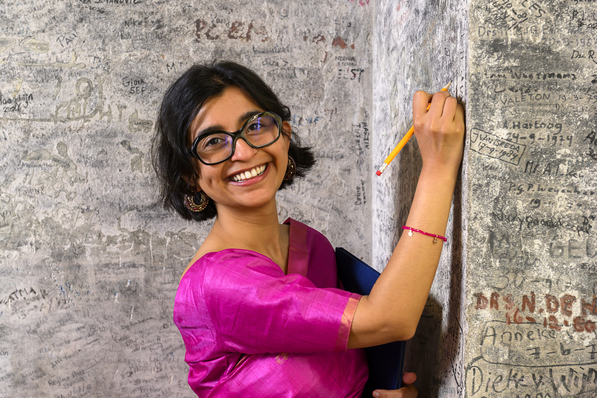
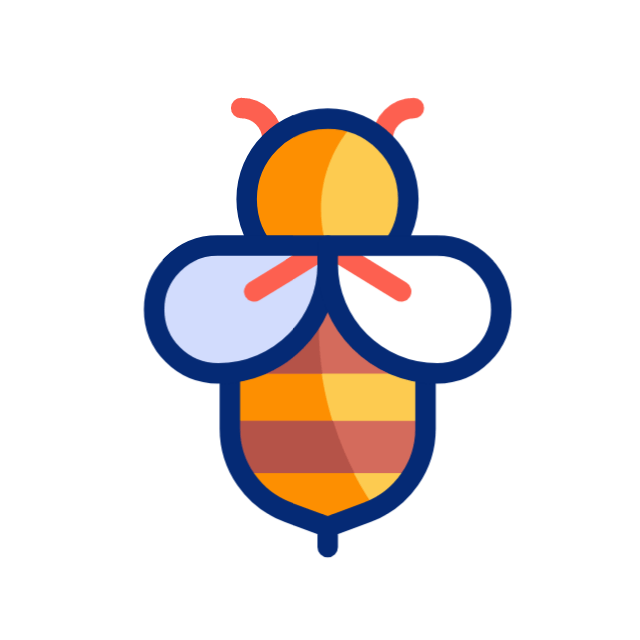

I am a data scientist with roots in research, consulting, and software development. I enjoy working at the intersection of data, systems, and behavioral science. I trained as an engineer and spent two years in technical consulting for telecom, fintech, and consumer goods clients in Bangladesh, primarily on product and financial modelling. I am most at home figuring out how patterns actually work. Agents are my friends, and a simulation is my playground. I also co-authored a book chapter in Fair Data Fair Africa Fair World, where I built a knowledge graph from the testimonies of trafficking survivors. My MSc. thesis introduced a two-layer agent-based model of climate negotiations among three types of countries. I am currently extending it so the agents can learn to make better choices.
I am based in Leiden, the Netherlands, and currently looking for opportunities in data and applied AI. I received my master's degree from Leiden University in computer science. I previously studied information technology at the National Institute of Technology, Durgapur.
Skills: agent-based modelling, statistical modelling, RAG, Python (Pandas, NumPy, Scikit-learn, Matplotlib, Statsmodels, Plotly, Mesa), PyTorch, SQL, FAIR data, OWL/RDF ontology design, SPARQL, Power BI, and Streamlit. Fluent in English and Bengali, and a beginner in Dutch.
Outstanding Agility Award, twice, RedDot Digital. Awarded for consistent delivery across KPIs, client impact, and stakeholder communication.
ICCR Full Scholarship: a government-funded, four-year BTech. JENESYS Exchange Fellowship: a fully funded exchange to Japan.
Volunteers with Green Kitchen Leiden on food waste reduction.
Hobbies include long-distance trekking, cycling, and films.

save the bees